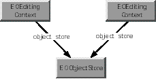
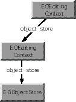
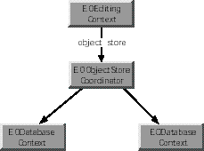

EOEditingContexts work in conjunction with instances of other classes to manage the object graph. Two other classes that play a significant role in object graph management are NSUndoManager and EOObserverCenter. NSUndoManager objects provide a general-purpose undo stack. As a client of NSUndoManager, EOEditingContext registers undo events for all changes made the enterprise objects that it watches.
EOObserverCenter provides a notification mechanism for an observing object to find out when another object is about to change its state. "Observable" objects (typically all enterprise objects) are responsible for invoking their willChange method prior to altering their state (in a "set" method, for instance). Objects (such as instances of EOEditingContext) can add themselves as observers to the objects they care about in the EOObserverCenter. They then receive a notification (as an objectWillChange: message) whenever an observed object invokes willChange.
The objectWillChange: method is defined in the EOObserving protocol. EOEditingContext implements the EOObserving interface. For more information about the object change notification mechanism, see the EOObserving protocol specification.
Typically, an EOEditingContext is created automatically for your application as a by product of some other operation. For example, the following operations result in the creation of network of objects that include an EOEditingContext:
Under certain circumstances, however, you may need to create an EOEditingContext programmatically-for example, if you're writing an application that doesn't include a graphical interface. To create an EOEditingContext, do this:
EOEditingContext *editingContext = [[EOEditingContext alloc] init];
This creates an editing context that's connected to the
default EOObjectStoreCoordinator. You can change this default setting
by initializing an EOEditingContext with a particular parent EOObjectStore. This
is useful if you want your EOEditingContext to use a different EOObjectStoreCoordinator
than the default, or if your EOEditingContext is nested. For example,
the following code excerpt initializes childEditingContext with
a parent object store parentEditingContext:
EOEditingContext *parentEditingContext; // Assume this exists.
EOEditingContext *childEditingContext = [[EOEditingContext alloc]
initWithParentObjectStore:parentEditingContext];For more discussion of working programmatically with EOEditingContexts, see the chapter "Application Configurations" in the Enterprise Objects Framework Developer's Guide.
You can use an EOEditingContext with any EOObjectStore. However, in a typical configuration, you use an EOEditingContext with the objects in the access layer. To access an EOEditingContext's adaptor level objects, you get the editing context's EOObjectStoreCoordinator from the editing context, you get an EODatabaseContext (EOAccess) from the object store coordinator, and you get the adaptor level objects from there. The following code demonstrates the process.
EOEditingContext *editingContext; // Assume this exists.
NSString *myEntityName; // Assume this exists.
EOFetchSpecification *fspec;
EOObjectStoreCoordinator *rootStore;
EODatabaseContext *dbContext;
EOAdaptor *adaptor;
EOAdaptorContext *adContext;
fspec = [EOFetchSpecification fetchSpecificationWithEntityName:myEntityName
qualifier:nil
sortOrderings:nil];
rootStore = (EOCooperatingObjectStore *)[editingContext rootObjectStore];
dbContext = [rootStore objectStoreForFetchSpecification:fspec];
adaptor = [[dbContext database] adaptor];
adContext = [dbContext adaptorContext];This example first creates a fetch specification, providing just the entity name as an argument. Of course, you can use a fetch specification that has non-nil values for all of its arguments, but only the entity name is used by the EOObjectStore objectStoreForFetchSpecification: method. Next, the example gets the editing context's EOObjectStoreCoordinator using the EOEditingContext method rootObjectStore. rootObjectStore returns an EOObjectStore and not an EOObjectStoreCoordinator, because it's possible to substitute a custom object store in place of an object store coordinator. Similarly, the EOObjectStoreCoordinator method objectStoreForFetchSpecification: returns an EOCooperatingObjectStore instead of an access layer EODatabaseContext because it's possible to substitute a custom cooperating object store in place of a database context. If your code performs any such substitutions, you should alter the above code example to match your custom object store's API. See the class specifications for EOObjectStore, EOObjectStoreCoordinator, and EOCooperatingObjectStore for more information.
An EOEditingContext's EOObjectStoreCoordinator can have more than one set of database and adaptor level objects. Consequently, to get a database context from the object store coordinator, you have to provide information that the coordinator can use to choose the correct database context. The code example above provides an EOFetchSpecification using the method objectStoreForFetchSpecification:, but you could specify different criteria by using one of the following EOObjectStoreCoordinator methods instead:
| Method | Description |
| cooperatingObjectStores | Returns an array of the EOObjectStoreCoordinator's cooperating object stores. |
| objectStoreForGlobalID: | Returns the cooperating object store for the enterprise object identified by the provided EOGlobalID. |
| objectStoreForObject: | Returns the cooperating object store for the provided enterprise object. |
After you have the EODatabaseContext, you can get the corresponding EOAdaptor and EOAdaptorContext as shown above. (EODatabaseContext, EOAdaptor, and EOAdaptorContext are all defined in EOAccess.)
The fundamental relationship an EOEditingContext has is to its parent EOObjectStore, which creates the object graph the EOEditingContext monitors. EOObjectStore is an abstract class that defines a source and sink of objects for an EOEditingContext. The EOObjectStore is responsible for constructing and registering objects, servicing object faults, and committing changes made in an EOEditingContext.
You can augment the basic configuration of an EOEditingContext and its parent EOObjectStore in several different ways. For example, multiple EOEditingContexts can share the same EOObjectStore, one EOEditingContext can act as an EOObjectStore for another, and so on. The most commonly used scenarios are described in the following sections.
One or more "peer" EOEditingContexts can share a single EOObjectStore ( Figure 0-1). Each EOEditingContext has its own object graph-so, for example, a given Employee row in a database can have separate object instances in each EOEditingContext. Changes to an object in one EOEditingContext don't affect the corresponding object in another EOEditingContext until all changes are successfully committed to the shared object store. At that time the objects in all EOEditingContexts are synchronized with the committed changes. This arrangement is useful when an application allows the user to edit multiple independent "documents."
Peer EOEditingContexts
EOEditingContext is a subclass of EOObjectStore, which gives its instances the ability to act as EOObjectStores for other EOEditingContexts. In other words, EOEditingContexts can be nested ( Figure 0-2), thereby allowing a user to make edits to an object graph in one EOEditingContext and then discard or commit those changes to another object graph (which, in turn, may commit them to an external store). This is useful in a "drill down" style of user interface where changes in a nested dialog can be okayed (committed) or canceled (rolled back) to the previous panel.
Nested EOEditingContexts
When an object is fetched into a nested EOEditingContext, it incorporates any uncommitted changes that were made to it in its parent EOEditingContext. For example, suppose that in one panel you have a list of employees that allows you to edit salaries, and that the panel includes a button to display a nested panel where you can edit detail information. If you edit the salary in the parent panel, you see the modified salary in the nested panel, not the old (committed) salary from the database. Thus, conceptually, nested EOEditingContexts fetch through their parents.
EOEditingContext overrides several of EOObjectStore's methods:
These methods are generally used when an EOEditingContext acts as an EOObjectStore for another EOEditingContext. For more information, see the individual method descriptions. For information on setting up this configuration for interfaces loaded from nib files, see the method description for setDefaultParentObjectStore:.
For a description of how to implement nested EOEditingContexts, see the chapter "Application Configurations" in the Enterprise Objects Framework Developer's Guide.
An EOEditingContext's object graph can contain objects from more than one external store ( Figure 0-3). In this scenario, the object store is an EOObjectStoreCoordinator, which provides the abstraction of a single object store by redirecting operations to one or more EOCooperatingObjectStores.
An EOEditingContext Containing Objects from Multiple Sources
In writing an application, it's likely that you'll use combinations of the different scenarios described in the above sections.
The most common way to explicitly fetch objects from an external store in an Enterprise Objects Framework application is to use EOEditingContext's objectsWithFetchSpecification: method. This method takes a fetch specification and returns an array of objects. A fetch specification includes the name of the entity for which you want to fetch objects, the qualifier (query) you want to use in the fetch, and the sort order in which you want the objects returned (if any). For example, the following code excerpt uses objectsWithFetchSpecification: to fetch all video store members who have Visa credit cards:
EOFetchSpecification *fetchSpec;
NSArray *results;
fetchSpec = [EOFetchSpecification fetchSpecificationWithEntityName:@"Member"
qualifier:[EOQualifier qualifierWithQualifierFormat:@"cardType = 'Visa' "]
sortOrderings:nil];
results = [editingContext objectsWithFetchSpecification:fetchSpec];Note that objects are allocated in the same zone as the EOEditingContext into which they're fetched.
EOEditingContext provides several methods for managing the changes made to objects in your application. You can use these methods to get information about objects that have changed, to selectively undo and redo changes, and to discard all changes made to objects before these changes are committed to the database. These methods are described in the following sections.
An EOEditingContext maintains information about three different kinds of changes to objects in its object graph: insertions, deletions, and updates. After these changes have been made and before they're committed to the database, you can find out which objects have changes in each of these categories by using the insertedObjects, deletedObjects, and updatedObjects methods. Each method returns an array containing the objects that have been inserted, deleted, and updated, respectively. The hasChanges method returns YES orNO to indicate whether any of the objects in the object graph have been inserted, deleted, or updated.
EOEditingContext includes the undo:, redo:, and revert: methods for managing changes to objects in the object graph. undo: asks the EOEditingContext's NSUndoManager to reverse the latest changes to objects in the object graph. redo: asks the NSUndoManager to reverse the latest undo operation. revert: clears the undo stack, discards all insertions and deletions, and restores updated objects to their last committed (saved) values.
EOEditingContext's undo support is arbitrarily deep; you can undo an object repeatedly until you restore it to the state it was in when it was first created or fetched into its editing context. Even after saving, you can undo a change. To support this feature, the NSUndoManager can keep a lot of data in memory.
For example, whenever an object is removed from a relationship, the corresponding editing context creates a snapshot of the modified, source object. The snapshot, which retains the removed object, is retained by the editing context and by the undo manager. The editing context releases the snapshot when the change is saved, but the undo manager doesn't. It continues holding the snapshot, so it can undo the deletion if requested.
If the typical usage patterns for your application generate a lot of change processing, you might want to limit the undo feature to keep its memory usage in check. For example, you could clear an undo manager whenever its editing context saves. To do so, simply send the undo manager a removeAllActions message (or a removeAllActionsWithTarget: message with the editing context as the argument). If your application doesn't need undo at all, you can avoid any undo overhead by setting the editing context's undo manager to nil with setUndoManager:.
The saveChanges method commits changes made to objects in the object graph to an external store. When you save changes, EOEditingContext's lists of inserted, updated, and deleted objects are flushed.
Upon a successful save operation, the EOEditingContext's parent EOObjectStore broadcasts an EOObjectsChangedInStoreNotification. Peers of the saved EOEditingContext receive this notification and respond by synchronizing their objects with the committed versions. See also
EOEditingContext provides methods for managing the enterprise objects in the context's object graph. This section describes these methods, as well as other techniques you can use to manage the object graph.
At different points in your application, you might want to do the following:
These scenarios are discussed in the following sections.
You use the EOEditingContext methods refaultObjects and refaultObject:withGlobalID:editingContext: to break retain cycles between your enterprise objects. For example, suppose you have an Employee object that has a to-one relationship to its Department, and the Department object in turn has an array of Employee objects. This circular reference constitutes a retain cycle, which you can break using the refault... methods. Note that retain cycles are automatically broken if you release the EOEditingContext.
You should use the refault... methods with caution, since refaulting an object doesn't remove the object snapshot from the undo stack. Objects that have been newly inserted or deleted should not be refaulted. In general, it's safer to use refaultObjects than it is to use refaultObject:withGlobalID:editingContext: since refaultObjects only refaults objects that haven't been inserted, deleted or updated. The method refaultObject:withGlobalID:editingContext: doesn't make this distinction, so you should only use it when you're sure you know what you're doing.
If you want to reset your EOEditingContext and free all of its objects, do the following:
EOEditingContext *editingContext; // Assume this exists. [editingContext revert]; // Discard uncommitted changes [editingContext refaultObjects];
Note that you must release any other retains on the enterprise objects in the EOEditingContext for them to actually be freed. For example, to clear a display group that references a list of enterprise objects, you'd do something like the following:
[displayGroup setObjectArray:nil];
Releasing the EODisplayGroup (and any user interface objects that refer to it) also has the effect of releasing the object array.
Using the invalidate... methods (described below) also has the effect of breaking retain cycles, but these methods have a more far-reaching effect. It's not recommended that you use them simply to break retain cycles.
EOEditingContext provides different techniques for discarding changes to enterprise objects. These techniques are as follows:
A different approach is to use the invalidate... methods, described in "Discarding the View of Objects Cached in Memory" .
One characteristic of an object graph is that it represents an internally consistent view of your application's data. By default, when you refetch data, Enterprise Objects Framework maintains the integrity of your object graph by not overwriting your object values with database values that have been changed by someone else. But what if you want your application to see those changes? You can accomplish this by using the EOFetchSpecification method setRefreshesRefetchedObjects:. Invoking setRefreshesRefetchedObjects: with the argument YES causes existing objects to be overwritten with fetched values that have been changed. Alternatively, you can use the EODatabaseContext (EOAccess) delegate method databaseContext:shouldUpdateCurrentSnapshot:newSnapshot:globalID:channel:.
Normally, when you set an EOFetchSpecification to refresh using setRefreshesRefetchedObjects:, it only refreshes the objects you're fetching. For example, if you refetch employees, you don't also refetch the employees' departments. However, if you also set the fetch specification to prefetch relationships, the refetch is propagated for all of the fetched objects' relationships that are specified with setPrefetchingRelationshipKeyPaths:.
Refreshing refetched objects only affects the objects you specify. If you want to refetch your entire object graph, you can use the EOEditingContext invalidate... methods, described below.
As described in the section "Discarding Changes to Enterprise Objects" , you can use undo: or revert to selectively discard the changes you've made to enterprise objects. Using these methods preserves the original cache of values fetched from the database. But what if you want to flush your in-memory object view all together-in the most likely scenario, to see changes someone else has made to the database? You can invalidate your enterprise objects using the invalidateAllObjects method or the invalidateObjectsWithGlobalIDs: method. (You can also use the action method refetch:, which simply invokes invalidateAllObjects). Unlike fetching with the EOFetchSpecification method setRefreshesRefetchedObjects: set toYES (described above), the invalidate... methods result in the refetch of your entire object graph.
The effect of the invalidateAllObjects method depends on how you use it. For example, if you send invalidateAllObjects to an EOEditingContext, it sends invalidateObjectsWithGlobalIDs: to its parent object store with all the globalIDs for the objects registered in it. If the EOEditingContext is nested, its parent object store is another EOEditingContext; otherwise its parent object store is typically an EOObjectStoreCoordinator. Regardless, the message is propagated down the object store hierarchy. Once it reaches the EOObjectStoreCoordinator, it's propagated to the EODatabaseContext(s). The EODatabaseContext discards the row snapshots for these globalIDs and sends an EOObjectsChangedInStoreNotification, thereby refaulting all the enterprise objects in the object graph.This refaulting in turn releases all objects not retained by your application or by an EODisplayGroup. The next time you access one of these objects, it's refetched from the database.
Sending invalidateAllObjects to an
EOEditingContext affects not only that context's objects, but objects
with the same globalIDs in other EOEditingContexts. For example,
suppose editingContext1 has objectA and objectB,
and editingContext2 has objectA, objectB,
and objectC. When you
send invalidateAllObjects to editingContext1, objectA and objectB are
refaulted in both editingContext1 and editingContext2.
However, objectC in editingContext2 is
left intact since editingContext1 doesn't have
an objectC.
If you send invalidateAllObjects directly to the EOObjectStoreCoordinator, it sends invalidateAllObjects to all of its EODatabaseContexts, which then discard all of the snapshots in your application and refault every single enterprise object in all of your EOEditingContexts.
The invalidate... methods are the only way to get rid of a database lock without saving your changes.
Any time your application is using more than one EOEditingContext as described in the section "Using EOEditingContexts in Different Configurations" , it's likely that one editing context will need to access objects in another.
On the face of it, it may seem like the most reasonable solution would be for the first editing context to just get a pointer to the desired object in the second editing context and modify the object directly. But this would violate the cardinal rule of keeping each editing context's object graph internally consistent. Instead of modifying the second editing context's object, the first editing context needs to get its own copy of the object. It can then modify its copy without affecting the original. When it saves changes, they're propagated to the original object, down the object store hierarchy. The method that you use to give one editing context its own copy of an object that's in another editing context is faultForGlobalID:editingContext:.
For example, suppose you have a nested editing context configuration in which a user interface displays a list of objects-this maps to the parent editing context. From the list, the user can select an object to inspect and modify in a "detail view"-this maps to the child editing context. To give the child its own copy of the object to modify in the detail view, you would do something like the following:
EOEditingContext *childEC, *parentEC; // Assume these exist.
id newObject = [childEC faultForGlobalID:[parentEC globalIDForObject:origObject]
editingContext:childEC];where origObject is
the object the user selected for inspection from the list.
The child can make changes to newObject without affecting origObject in the parent. Then when the child saves changes, origObject is updated accordingly.
When changes are successfully saved in an EOObjectStore, it broadcasts an EOObjectsChangedInStoreNotification. An EOEditingContext receiving this notification synchronizes its objects with the committed values by refaulting objects needing updates so the new values are retrieved from the EOObjectStore the next time they are needed. However, locally uncommitted changes to objects in the EOEditingContext are by default reapplied to the objects, in effect preserving the uncommitted changes in the object graph. After the update, the uncommitted changes remain uncommitted, but the committed snapshots have been updated to reflect the values in the EOObjectStore.
You can control this process by implementing two delegate
methods. Before any updates have occurred, the delegate method editingContext:shouldMergeChangesForObject: is
invoked for each of the objects that has both uncommitted changes
and an update in the EOObjectStore. If the delegate returns YES,
the uncommitted changes are merged with the update (the default
behavior). If it returns NO, then the object is invalidated (and
refaulted) without preserving any uncommitted changes. As a side
effect, the delegate might cache information about the object (globalID,
snapshot, etc.) so that a specialized merging behavior could be
implemented. At this point, the delegate should not make changes
to the object because it is about to be invalidated. However, the
delegate method editingContextDidMergeChanges: is
invoked after all of the updates for the EOObjectsChangedInStoreNotification have
been completed, including the merging of all uncommitted changes.
By default, it does nothing, but this delegate method might perform
the customized merging behavior based on whatever information was
cached in editingContext:shouldMergeChangesForObject: for
each of the objects that needed an update. See the informal protocol EOEnterpriseObject for
the descriptions of the methods changesFromSnapshot and reapplyChangesFromDictionary:, which
might be useful for implementing custom merging behaviors.
When you fetch objects into your application, you create a graph of objects instantiated from database data. From that point on, your focus should be on working with the object graph-not on interacting with your database. This distinction is an important key to working with Enterprise Objects Framework.
One of the primary benefits of Enterprise Objects Framework is that it insulates you from having to worry about database details. Once you've defined the mapping between your database and your enterprise objects in a model file, you don't need to think about issues such as foreign key propagation, how object deletions are handled, how operations in the object graph are reflected in your database tables, and so on.
This can be illustrated by considering the common scenario in which one object has a relationship to another. For example, suppose an Employee has a relationship to a Department. In the object graph, this relationship is simply expressed as an Employee object having a pointer to its Department object. The Department object might in turn have a pointer to an array of Employee objects. When you manipulate relationships in the object graph (for example, by moving an Employee to a different Department), Enterprise Objects Framework changes the appropriate relationship pointers. For example, moving an Employee to a different Department changes the Employee's department pointer and adds the Employee to the new Department's employee array. When you save your changes to the database, Enterprise Objects Framework knows how to translate these object graph manipulations into database operations.
As described above, you generally don't need to concern yourself with how changes to the object graph are saved to the database. However, you do need to concern yourself with managing the object graph itself. Since the object graph is intended to represent an internally consistent view of your application's data, one of your primary considerations should be maintaining its consistency. For example, suppose you have a relationship from Employee to Project, and from Employee to Manager. When you create a new Employee object, you must make sure that it has relationships to the appropriate Projects and to a Manager.
Just as you need to maintain the internal consistency of an EOEditingContext's object graph, you should never directly modify the objects in one EOEditingContext from another EOEditingContext. If you do so, you risk creating major synchronization problems in your application. If you need to access the objects in one EOEditingContext from another, use the method faultForGlobalID:editingContext:, as described in "Working with Objects Across Multiple EOEditingContexts" . This gives the receiving EOEditingContext its own copy of the object, which it can modify without affecting the original. Then when it saves its changes, the original is updated accordingly.
One of the implications of needing to maintain the consistency of your object graph is that you should never copy an enterprise object (though you can snapshot its properties), since this would be in conflict with uniquing. Uniquing dictates that an EOEditingContext can have one and only one copy of a particular object. For more discussion of uniquing, see the chapter "Behind the Scenes" in the Enterprise Objects Framework Developer's Guide. Similarly, your enterprise objects shouldn't override the isEqual: method. Enterprise Objects Framework relies on the default NSObject implementation which checks instance (pointer) equality rather than value equality.
In WebObjects, applications that use the Enterprise Objects Framework must enlist the help of the EOEditingContext to archive enterprise objects. The primary reason is so that the EOEditingContext can keep track, from one transaction to the next, of the objects it manages. But using an EOEditingContext for archiving also benefits your application in these other ways:
An enterprise object (like any other object that uses the OpenStep archiving scheme) makes itself available for archiving by declaring that it conforms to the NSCoding protocol, by implementing the protocol's two methods, encodeWithCoder: and initWithCoder:. It implements these methods like this:
- (void)encodeWithCoder:(NSCoder *)aCoder {
[EOEditingContext encodeObject:self withCoder:aCoder];
}
- (id)initWithCoder:(NSCoder *)aDecoder {
return [EditingContext initObject:self withCoder:aDecoder];
}The enterprise object simply passes on responsibility for archiving and unarchiving itself to the EOEditingContext class, by invoking the encodeObject:withCoder: and initObject:withCoder: class methods. The EOEditingContext takes care of the rest. For more discussion of encodeWithCoder: and initWithCoder:, see the NSCoding protocol specification in the Foundation Framework Reference.
EOEditingContext includes two additional methods that affect the archiving and unarchiving of objects: setUsesContextRelativeEncoding: and usesContextRelativeEncoding. When you use context relative encoding, it means that enterprise objects that archive themselves using the EOEditingContext encodeObject:withCoder: method archive their current state (that is, all of their class properties) only if they (the objects) are marked as inserted or updated in the EOEditingContext. Otherwise, they archive just their globalID's since their state matches what's stored in the database and can be retrieved from there. If usesContextRelativeEncoding returns NO, it means the current state will always be archived, even if the enterprise object is unmodified. The default is NO for Yellow Box applications, and YES for WebObjects applications.